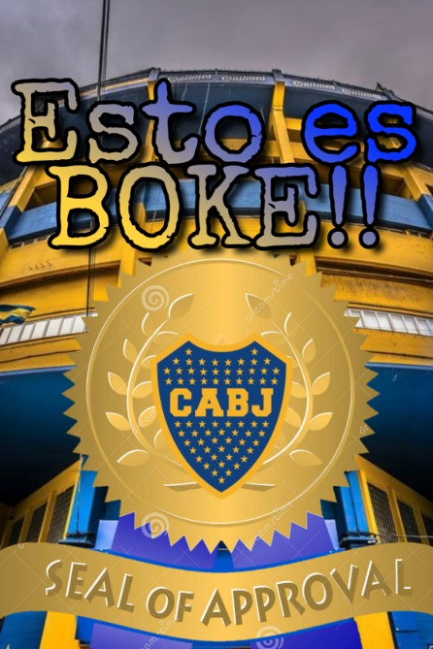
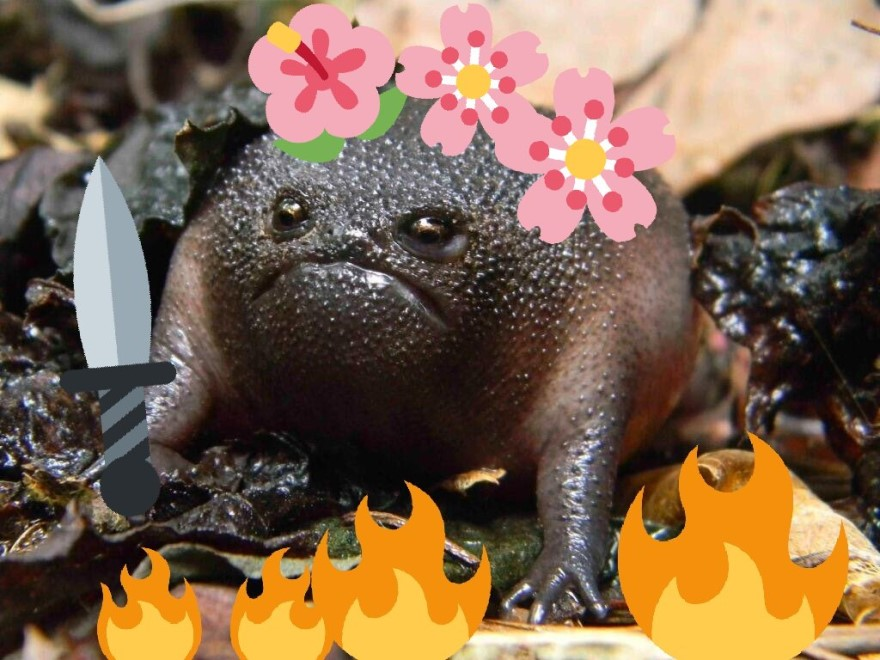

Juana de Arco Mood ‚öîÔ∏èüõ°Ô∏è
el Jardín de las delicias
del Bosco
Volver a las Raices ...
Developer
sustantivo. [de-ve-lo-per]
Toda persona involucrada en la producción del producto software
Fuente: 220V a 9V 1.5A
Lenguaje de programación
Un lenguaje de programación es un lenguaje formal, que comprende un conjunto de instrucciones que producen varios tipos de resultados.
Los lenguajes de programación se utilizan en la programación de computadoras para implementar algoritmos
Los prejuicios
HTML -> maquetado -> diseño -> cosa de minita :(
Scrum is not Agile
&
the waterfall strawman
The dead MarchüíÄ‚ò†Ô∏è
(proyectos destinados a fracasar desde su creación)
El MITO del 10x engineer
El Elefante en la Sala
"La Meritocracia"
Es mas importante saber antipatrones,
que patrones (del libro de GoF)
Solo contratamos a los mejores(?)